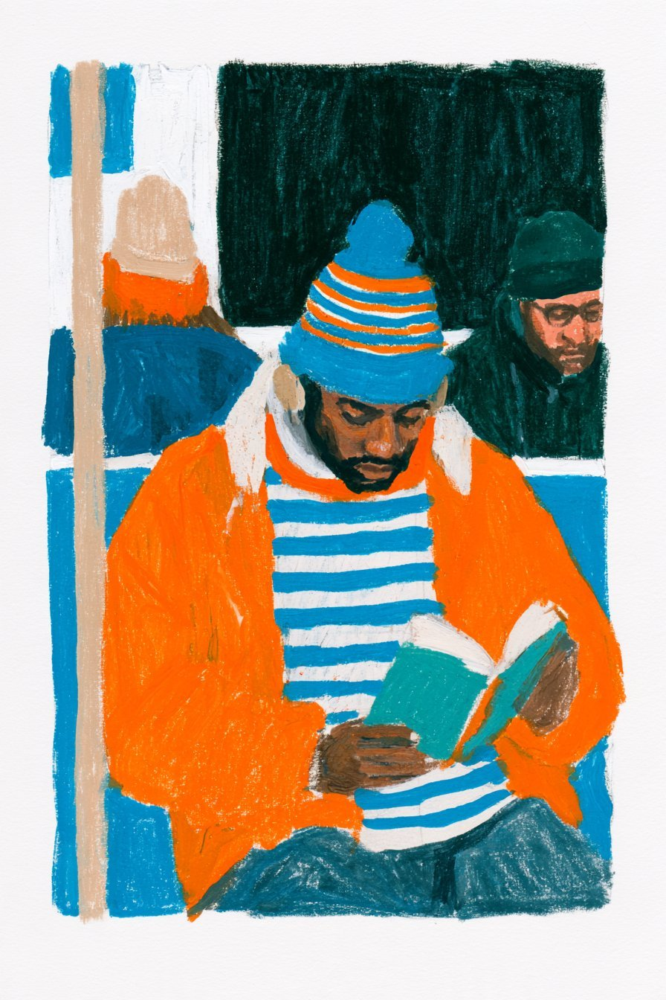
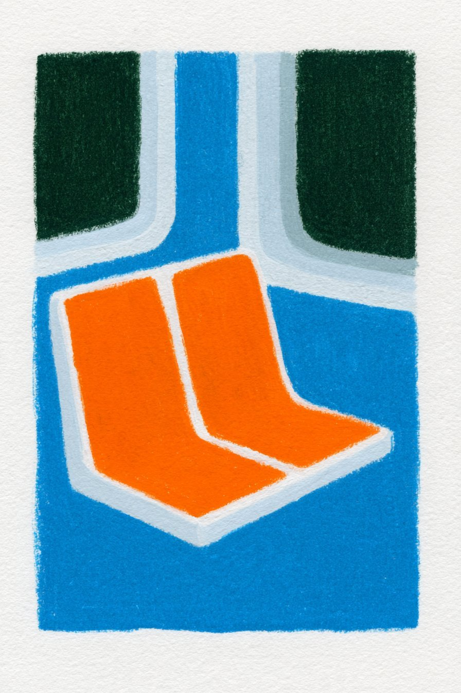
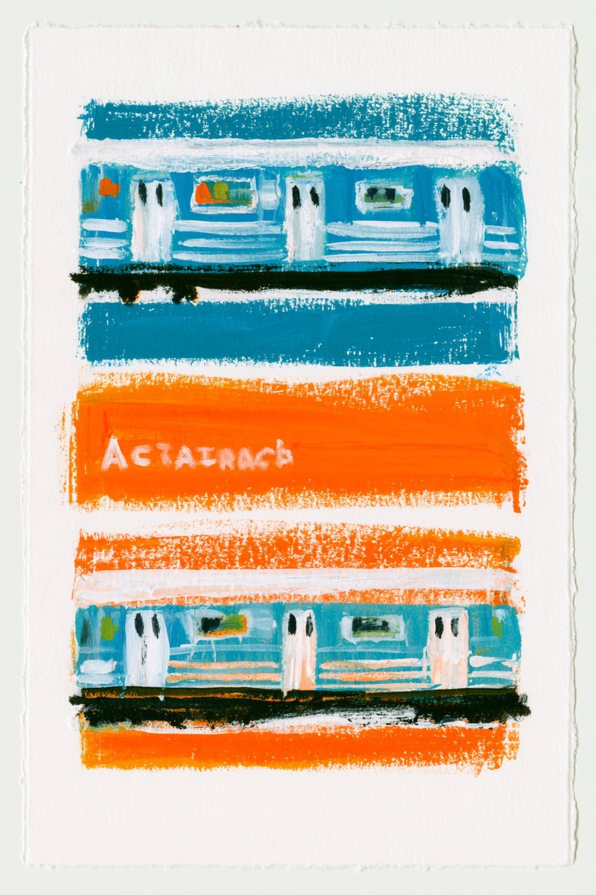

Subway
A gouache-style poster of a blurred subway car rushing past bands of teal and orange, with rough paper edges.
| Creator | Gizem Akdag @gizakdag |
|---|---|
| Platform | X |
| Model | — |
| Likes | 256 |
| Posted | 2026-10-11 |
| Visual style | Watercolor storybook |
| Regional vibe | No specific region |
| Genre | Daily life Travel / city |
| Mood | Lonely / melancholy |
Prompt · from the post
--sref 2792491415